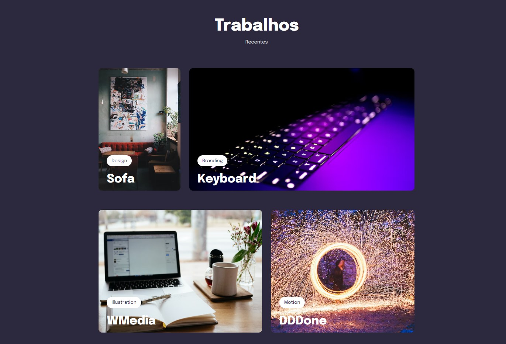

Responsividade
Sobre o Projeto
Esse projeto foi utilizado somente CSS e HTML, é um projeto um pouco simples mas que tem uma grande carga de informações, neste projeto ocorreu um estudo sobre Display Grid, Motion graphic, at-rule, e algumas outras funcionalidades do CSS. Uma aba que se adapta-se a cada resolução de tela podendo ser usado em celular, tablets ou monitores um pouco maior que o comum. Para conferir o projeto mais de perto é so clicar no link abaixo, caso queira so ver o funcionamento basta clicar na página do projeto